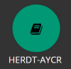
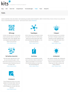
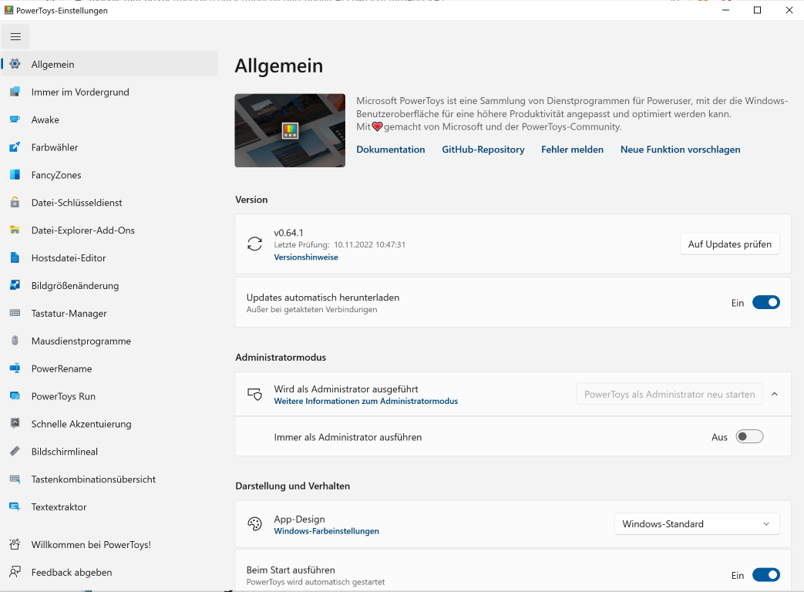

Kapitel 1: Propädeutikum der Informationstechnologie
In diesem Kapitel ...
- ... wird das Modellunternehmen, für das Sie im Lernfeld 2 arbeiten, vorgestellt.
ChangeIT GmbH kennenlernen
Das IT-Systemhaus ChangeIT GmbH ist seit mehreren Jahren auf dem IT-Markt etabliert und behauptet sich dort aktuell sehr erfolgreich gegen mehrere Wettbewerber. Herr Sinter hat das Unternehmen 1997 gegründet und führt es seither alleine als eingetragener Kaufmann.

Propädeutikum der Informationstechnologie
Sie haben sich für einen Bildungsgang der IT-Berufe entschieden. Die kaufmännischen IT-Berufe beinhalten dabei sowohl wirtschaftliche als auch technische Fragestellungen. Für den Technikbereich sind einige Grundkenntnisse für den Unterricht wichtig. Abhängig davon, wie viel Sie sich bereits vor Ihrer Ausbildung privat, in der Schule oder ggf. in vorherigen Ausbildungen bzw. im Studium damit auseinandergesetzt haben, liegt unterschiedlich viel Vorwissen vor. Im ersten Block soll daher ein Propädeutikum (Einführungsveranstaltung / Einführungsvorlesung) als Crash-Kurs herangezogen werden, um eine erste Basis zu legen oder Inhalte zu vertiefen. Mit dem folgenden Informationsmaterial sollen die Problemstellungen aus den Arbeitsaufträgen s.u. gelöst werden.
Arbeitsauftrag A|1.0: Fragestellungen zu "Basics"
//TODO Fragestellungen ergänzen
Arbeitsauftrag A|1.1: Fragestellungen zu "Pro"
//TODO Fragestellungen ergänzen
| Basics | Pro |
|---|---|
| Rufen Sie die Landingpage auf. Wählen Sie dort die Bubble des HERDT AYCR aus. Anschließend finden Sie unter Home > HERDT-Themenkatalog > IT-Technik / Netzwerke / Systeme > IT-Technik > Informationstechnologie Grundlagen (Stand 2021) ein Script mit einem Überblick zu IT-Technologien und aktuellen Entwicklungen. Nutzen Sie dieses, um sich in die Welt der IT einzufinden. Bearbeiten Sie die Übungen in dem Script, um Ihre neuen Kenntnisse anzuwenden. | Sie legen Ihren Fokus auf die Sicherheit von IT-Systemen. Dazu nutzen Sie in der Cisco NetAcad den Kurs Cybersecurity Essentials, welcher via Skills for All-Platform zur Selbsteinschreibung bereitsteht. Die Ziele dieses Kurses sind die Sicherheit für Netzwerke, Server und Anwendungen. Mit Einsatz des Cisco Packet Tracer werden Übungen in simulierten Netzwerkumgebungen durchgeführt. |
| zur Landingpage | zur Cisco NetAcad |
Zusätzliches Material, weitere Übungen & Tipps
Die folgenden Übungen und Tipps & Tricks dienen Ihrer persönlichen Wiederholung und Vorbereitung auf Klassenarbeiten, Prüfungen etc. Die Übungen werden im Rahmen des Unterrichts nicht besprochen, es sei denn Sie haben konkrete Fragen hierzu.
Ich kann, weil ich will, was ich muss! (Immanuel Kant)
Zusatzmaterial
| HERDT Campus AYCR | Adobe Creative Cloud | Tool-Sammlung kits |
|---|---|---|
 |
 |
|
| Im HERDT Campus AYCR finden Sie viele PDF-Skripte zu Unterrichtsthemen. Der Zugriff auf den Service ist für Schüler:innen an den MMBbS inklusive. Sie können die Verlagsseite über Ihre Landingpage erreichen. | Wenn Sie Handlungsergebnisse grafisch darstellen oder eine visuelle Übersicht anlegen wollen, greifen Sie gerne auf das Adobe CC zurück, welches Ihnen an den MMBbS angeboten wird. Zur Ersteinrichtung haben Sie eine E-Mail erhalten. Der Blick für Anfänger in Adobe Express lohnt sich. | Auf der Webseite von kits (Kompetent in Technik und Sprache) gibt es eine Zusammenstellung diverser Tools wie dem QR-Code-Generator, einem kollaborativen Mindmap-Tool (TeamMapper), einem Etherpad und einigen mehr. |
| zur Landingpage | zu Adobe Express | zur Sammlung |
Lernstrategien & Werkzeuge
Taschenrechner
Beschaffen Sie sich einen Taschenrechner, wie bspw. den Casio fx 991 DEX, der Zahlensysteme umrechnen kann und arbeiten Sie sich in dessen Funktionsweise ein. Die Vorgaben der IHK lassen einen Taschenrechner zu, der
- nicht programmiert (daher kann man über GTR streiten),
- netzunabängig (also mit Batterien) und
- ohne Kommunikationsmöglichkeit (also auch keine App auf dem Smartphone) ist.
Taschenrechner Beispiel
In diesem Video wird die Umrechnung von Zahlensystemen am Beispiel des Casio fx 991 DEX gezeigt:
https://www.youtube.com/watch?v=QE7D-d2goCQ
PowerToys (für Microsoft-Geräte)
PowerToys von Microsoft sind eine Sammlung von Hilfsprogrammen, die im Alltag sehr nützlich sind. Bspw. das Verkleinern von Bildern, die Anzeige von Fenstern mithilfe von zuvor eingerichteten Zonen, das Umbenennen mehrerer Dateien oder das Feststellen eines Farbwertes sind einfach und schnell durchführbar.

GitHub
GitHub.io - LF2-Kurs als MkDocs-Variante
https://herr-nm.github.io/MMBbS_KIT_LF02/
GitHub.io - Curriculum der kaufmännischen IT-Berufe
https://herr-nm.github.io/MMBbS_KIT_Curriculum/
Lizenz

Der KIT LF02 Kurs von André Neumann ist lizenziert unter einer Creative Commons Namensnennung - Nicht-kommerziell - Weitergabe unter gleichen Bedingungen 4.0 International Lizenz. Fragen, Hinweise etc. an neumann@mmbbs.de.